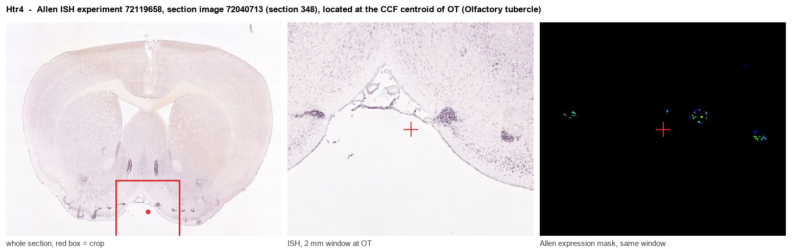
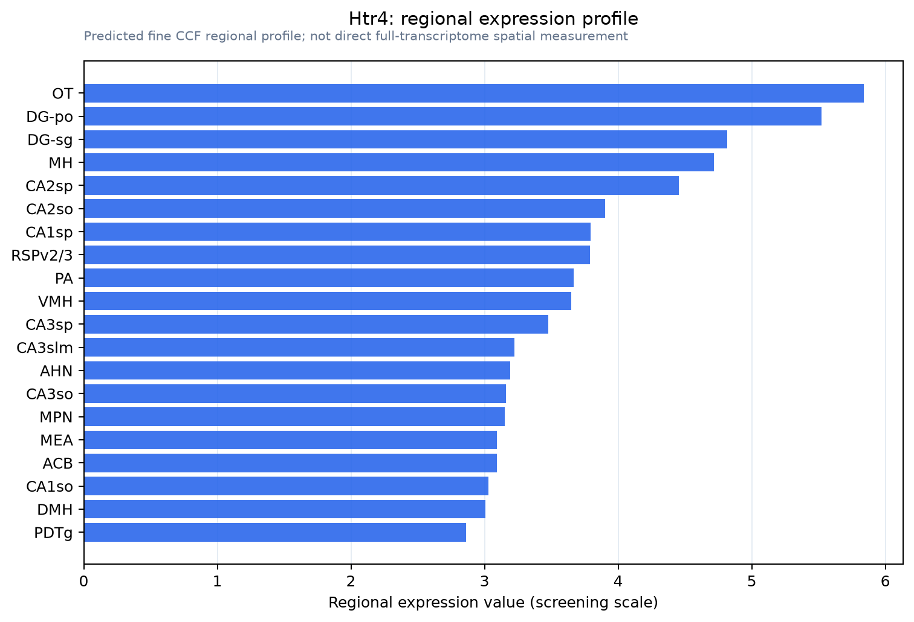

Htr4
5-hydroxytryptamine receptor 4 (5-HT-4) (5-HT4) (Serotonin receptor 4)
Spatial tier: REGION_BIASED · Class: GPCR · Top region: OT (Olfactory tubercle) · Positive regions: 42/554
42.0Discovery Score
42.0Targetability Score
CEvidence grade C
What this means: Htr4: fine CCF profile is region-biased toward OT (top regions: OT, DG-po, DG-sg, MH, CA2sp); this is a discovery lead, not direct proof.
Function in OT: evidence, prediction, innovation
- Gene function
- HTR4 is the serotonin 5-HT4 receptor, the Gs-coupled member of the serotonin receptor family. Activation raises cAMP and PKA activity, closes background potassium channels and increases neuronal excitability and transmitter release; 5-HT4 agonists such as RS67333 and prucalopride are used for gut motility and are under study as fast-acting antidepressants.
- Region function
- The olfactory tubercle is a ventral striatal olfactory cortex that receives direct olfactory bulb input and dense VTA dopamine input; its medium spiny neurons and islands of Calleja link odour cues to reward, motivation and odour-guided approach behaviour.
- Published in this region
- expression only Waeber 1994 and Waeber 1996, using the selective antagonist radioligand [3H]GR113808 in mouse, rat and guinea pig, found the densest 5-HT4 binding in the islands of Calleja, olfactory tubercle and fundus striati. These remain binding-site maps; no study has manipulated 5-HT4 within the tubercle, although Ballardin 2024 and Qiao 2026 dissect 5-HT4 actions in dorsal striatum.
- Predicted function
- Prediction: 5-HT4 on olfactory tubercle medium spiny neurons and islands of Calleja granule cells should act as a Gs amplifier that raises MSN excitability and cAMP-dependent plasticity during odour-reward learning, complementing dopamine D1 signalling. Intra-tubercle RS67333 is predicted to enhance acquisition of learned odour preference and odour-guided approach, while local GR113808 or Htr4 knockdown should slow that learning and reduce sucrose/odour-cue motivation without gross olfactory-detection deficits.
- Innovation
- ★★★★☆ 4/5 The tubercle/islands of Calleja carry the brain's highest 5-HT4 density, yet every functional 5-HT4 study has been done in hippocampus, dorsal striatum or gut.
- Tools
- Agonists RS67333 and prucalopride, antagonists GR113808 and SB204070; Htr4 knockout mice; 5-HT4-selective radioligand [3H]GR113808; olfactory tubercle targeting via Drd1-Cre/Drd2-Cre and islands-of-Calleja-enriched Cre lines.
- References
Direct evidence located at the region

Allen ISH experiment 72119658, section image 72040713 (section 348): the section that contains the CCF centroid of Olfactory tubercle according to the Allen image-to-atlas alignment (reference_to_image), with a 2 mm window around that point. Left: whole section, red box = window. Middle: ISH signal. Right: Allen's expression-mask view of the same window. open this image in the Allen viewer
Look it up yourself: Allen Mouse Brain ISH for Htr4Allen reference atlas: OT (structure 754)ABC Atlas MERFISH viewer(in the ABC Atlas choose dataset MERFISH-C57BL6J-638850-CCF, colour cells by gene "Htr4" or by parcellation_substructure "OT")All genes confined to OT + 3-D brain
Direct spatial evidence
MERFISH REGION LOCATOR

Regional expression figure

Predicted WMB × fine-CCF profile; not direct full-transcriptome spatial measurement.
Spatial profile
Evidence and specificity
- Evidence status
- PREDICTED_FINE
- Direct sources
- None; predicted localization only
- Exclusive threshold
- 12 positive regions out of 554
- Spatial specificity
- 0.286
- Top-region fraction
- 0.040
- Filter status
- PASS
Interpretation limits
- Cell-type-to-region projection is imputed expression, not direct spatial measurement.
- Adult reference atlases do not establish stability across age, sex, strain, state, or disease.
- Transcript abundance does not guarantee protein abundance or genetic-tool performance.